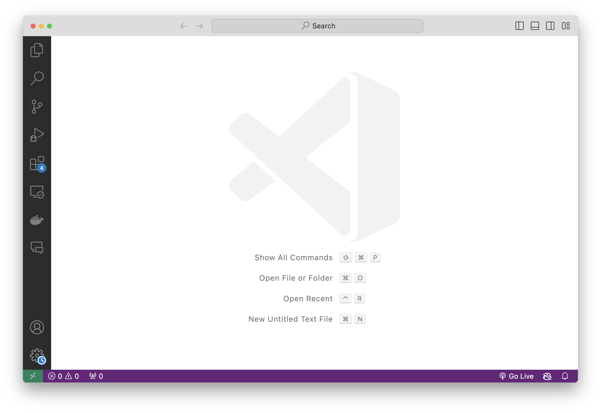
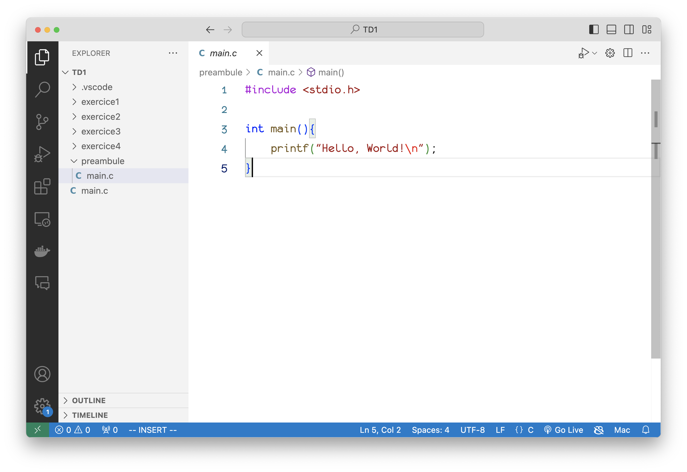
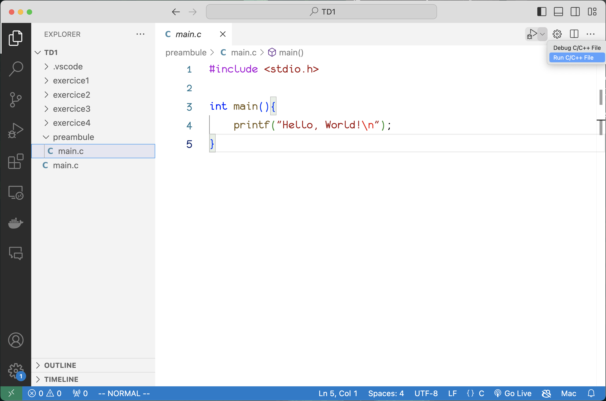
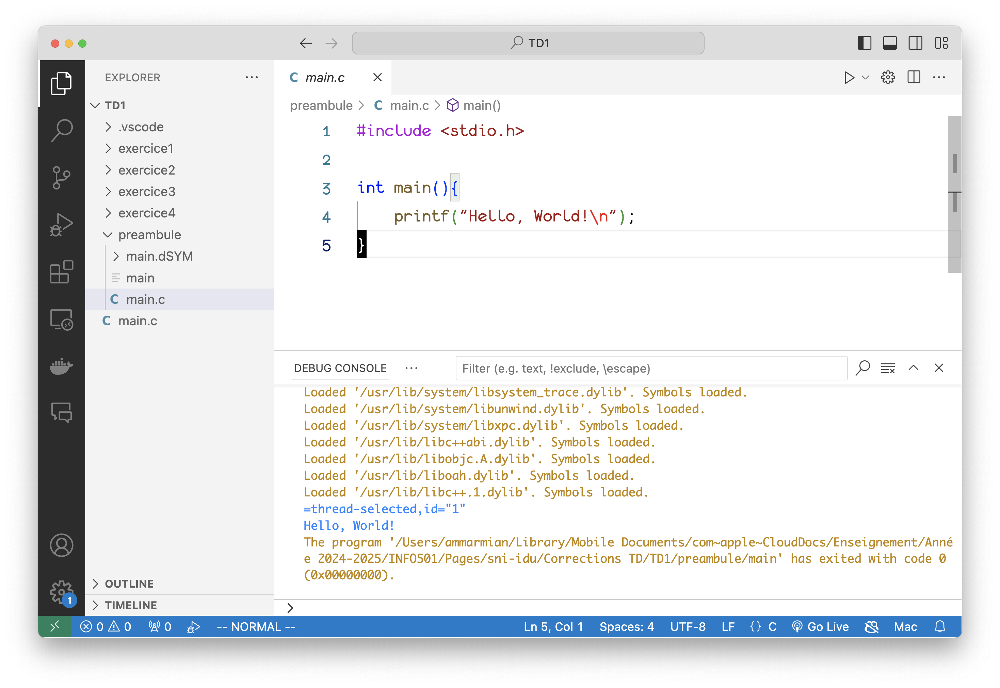
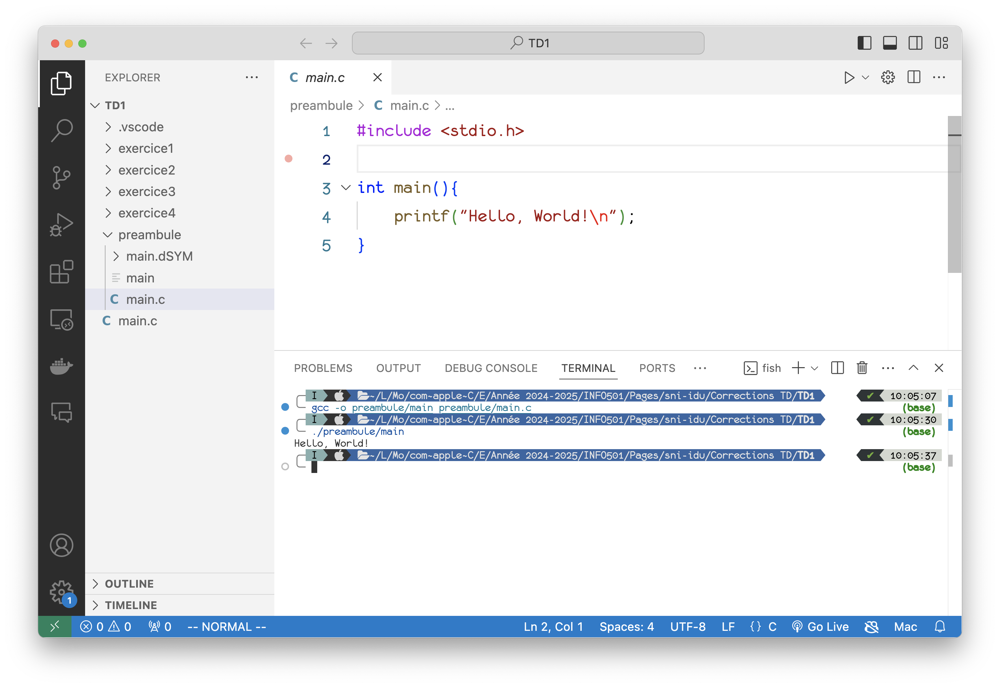

TD1 - Familiarisons nous avec le langage C.
Table des matières
- Préambule : Hello World
- Visual Studio Code
- Exercice 1: Un triangle dans le terminal
- Exercice 2 : Des sommes et des produits
- Exercice 3 : Le sinus d'un angle
- Exercice 4 : Calcul du PGCD et PPCM de deux entiers
Préambule : Hello World
Rappelons dans un premier temps les bases de l'écriture, compilation et exécution d'un programme C. Pour cela concentrons sur le programme suivant :
#include <stdio.h>
int main(){
printf("Hello, World\n");
}
L'objectif de ce préambule est d'être capable d'écrire, compiler et exécuter ce programme à travers le terminal de linux. En vous aidant de ce que vous avez vu en cours, éxécuter ce programme à l'écran.
Organisez vous de façon à créer un dossier pour cet exercice et à y placer le fichier source et le fichier exécutable. Le fichier source devra s'appeler main.c et l'éxécutable hello_world.
Pourquoi doit-on mettre la ligne #include <stdio.h> ?
Visual Studio Code
On va maintenant passer à l'exécution sous Visual Studio Code. Pour cela, on va utiliser l'extension C/C++ de Microsoft que le logiciel vous propose d'installer dés lors que vous ouvrez un fichier C. Lorsque l'on ouvre VS Code on a la fenêtre suivante:

Ouvrez alors votre dossier précédent et on aura par exemple:

On a alors deux façon d'exécuter le programme : à travers un terminal dans VS Code ou bien directement dans le logiciel. Pour cela, on peut appuyer sur le bouton en haut à droite de l'écran ou bien faire Ctrl+Shift+B:

Une fois le programme lancé, on aura le résultat dans le terminal de VS Code:
Cette façon de procéder amène beaucoup de d'éléments au dela de l'exécution du programme et pour des programmes simples on peut se contenter de passer par le terminal intégré à VSCode :

Exercice 1: Un triangle dans le terminal
On souhaite écrire un programme qui affiche un triangle dans le terminal. Pour cela, on vous demande d'écrire un programme qui prend en entrée un entier n impair et affiche un triangle de hauteur n dans le terminal. Par exemple, si n = 5, le programme devra afficher :
*
***
*****
*******
*********- Dans un premier temps, écrire un programme qui affiche un triangle de hauteur 3 pour vous familiariser avec
printf. - Supposez
nfixé, écrire le programme.Aide
Compter le nombre d'espaces à mettre et d'étoiles à mettre par ligne.
- Demandez à l'utilisateur de rentrer
net affichez le triangle correspond. Bonus: On pourra vérifiera quenest impair et redemander autant de fois que nécéssaire. - Réorganiser votre code de façon à faire une fonction
print_trianglequi prend en paramètrenet affiche le triangle correspondant. Le prototype de cette fonction seravoid print_triangle(int n). On expliquera pourquoi on écritvoiddans ce cas.
On s'organisera évidemment pour faire un autre dossier pour ce nouvel exercice de façon à ne pas mélanger les fichiers.
Exercice 2 : Des sommes et des produits
2.1 - Somme des \(n\) premiers entiers
On souhaite écrire un programme qui calcule la somme des \(n\) premiers entiers:
$$
\sum_{i=1}^{n} i = 1 + 2 + 3 + \ldots + n.
$$
Pour effectuer un calcul itératif de cette somme, supposons que nous ayons calculé la somme des \(n−1\) Premiers entiers et que nous ayons placé le résultat dans une variable resultat. On a alors que la somme des \(n\) premiers entiers est la somme des \(n−1\) premiers entiers plus \(n\).:
$$
\underbrace{\sum_{i=1}^{n} i}_{\mathrm{resultat}} = \underbrace{\sum_{i=1}^{n-1} i}_{\mathrm{resultat}} + n
$$
Ecrire un programme qui demande à l'utilisateur de rentrer un entier \(n\) et qui affiche la somme des \(n\) premiers entiers. On utilisera une boucle for pour effectuer la somme.
Aide
D'après la description, le pseudo-code serait le suivant:
resultat <- 0
pour i allant de 1 à n faire:
resultat <- resultat + i
2.2 - Factorielle d'un entier
On souhaite écrire un programme qui calcule la factorielle d'un entier \(n\), notée \(n!\). La factorielle d'un entier \(n\) est le produit des entiers de 1 à \(n\):
$$
n! = \prod_{i=1}^{n} i = 1 \times 2 \times 3 \times \ldots \times n.
$$
En vous basant sur le programme réalisé précédemment, écrire un programme qui demande à l'utilisateur de rentrer un entier \(n\) et qui affiche la factorielle de \(n\). On utilisera une boucle for pour effectuer le calcul.
Enfin mettez ces deux programmes sous la forme de fonctions dont on spécifiera les prototypes
Exercice 3 : Le sinus d'un angle
Une visualisation du développement limité. Source: Youtube.
On rappelle que le développement limité de la fonction sinus au voisinage de \(0\) à l’ordre \(2k+1\) (et même \(2k+2\) puisque les termes des puissances paires sont nuls) est le suivant : $$ \sin (\theta)=\theta-\frac{\theta^{3}}{3 !}+\frac{\theta^{5}}{5 !}-\cdots+(-1)^{k} \frac{\theta^{(2 k+1)}}{(2 k+1) !}+O\left(\theta^{(2 k+3)}\right). $$ L’objectif de cet exercice est de calculer une approximation de la valeur de la fonction sinus en utilisant ce développement limité.
- Ecrire, sur papier, le développement limité à l’ordre n Et non pas à l'ordre \(2k+1\). en utilisant le symbole de sommation comme à la partie précédente. On fera très attention aux limites pour l’indice de sommation. Afin d’éviter les erreurs, vérifier votre formule pour l’ordre 1 et l’ordre 5.
- Ecrire alors un fonction
float sinus(float x, int n)qui prend en paramètre un réel \(x\) et un entier \(n\) et qui renvoie une approximation de \(\sin(x)\) à l’ordre \(n\). On utilisera la formule précédente pour effectuer le calcul ainsi que la fonctionfactoriellede l'exercice précédent. Tester votre fonction pour des angle de \(\frac{\pi}{2}\), \(\frac{\pi}{3}\) et \(\pi\). - À l’itération i, on calcule \((2i+1)!\) et à l’itération \(i+1\), on calcule \((2i+3)!\) et cette manière de procéder n’est pas optimale. En effet, il suffit de remarquer que: $$ (2i+3)! = (2i+1)!\times(2i+2)\times(2i+3) $$ Ainsi, à l’itération \(i+1\), on recalcule \((2i+1)!\), information que l’on avait calculée à l’itération \(i\). En utilisant cette remarque, optimiser votre algorithme pour qu’il calcule à chaque itération \((2i+1)!\) mais sans utiliser la fonction factorielle.
- On s’intéresse maintenant à l’erreur d’approximation entre le calcul du sinus par la fonction sin de la librairie math et celui par le développement limité.
Ecrire le programme qui fait croître l’ordre du développement limité jusqu’à ce que la valeur absolue de l’erreur d’approximation soit inférieure à une valeur donnée.
Pour pouvoir utiliser la fonction sin de la librairie math, il faut inclure la librairie math.h en début de programme. On aura alors accès aux fonctions sin et fabs qui permettent de calculer respectivement le sinus d’un angle et la valeur absolue d’un réel. La compilation change légèrement et il faut ajouter l’option -lm à la commande de compilation. Par exemple, si votre programme s’appelle sinus.c, la commande de compilation sera:
gcc -o sinus main.c -lmOn n'hésitera pas à définir des fonctions annexes qui seraient utiles pour l'exercice.
Exercice 4 : Calcul du PGCD et PPCM de deux entiers
En vous aidant du CM1 ainsi que de vos recherches, faire un programme qui demande à l'utilisateur de rentrer deux entiers \(a\) et \(b\) et qui affiche le PGCD et le PPCM de ces deux entiers. On utilisera l'algorithme d'Euclide pour le calcul du PGCD et la formule suivante pour le PPCM: $$ \text{PPCM}(a,b) = \frac{a \times b}{\text{PGCD}(a,b)}. $$